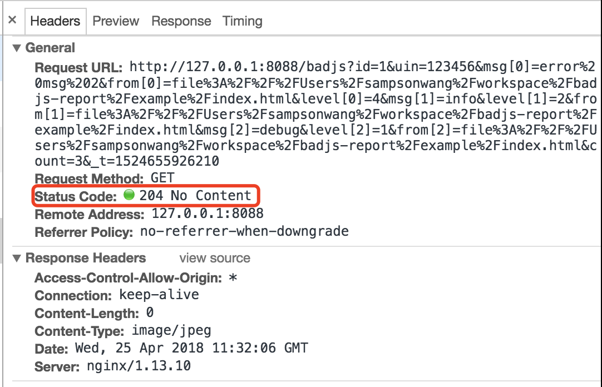
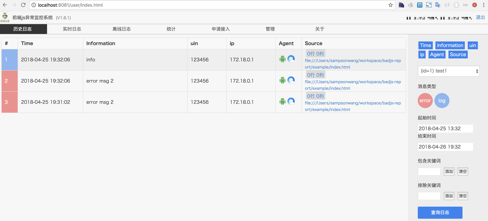

实时抓取用户日志，并且可以设置过滤条件
可以查看每个项目的badjs数据统计，以及一段时间的趋势

每天给项目管理者发送badjs日报邮件，包括项目的badjs趋势，以及错误的详细信息，帮助开发者快速定位解决问题
根据业务pv以及badjs错误量给项目设定分值，按评分统计项目，找到各个项目间的差距，并邮件输出
首先需要一台服务器，用来部署badjs服务。
badjs-report.js 文件的引入在页面的头部，提前加载，保证可以截获页面所有的报错。
<head>
<script src="xxxx/badjs-report.js"></script>
</head>
系统的使用请参考文档: badjs使用文档
可以在代码中造一个错误，观察badjs是否上报请求，上报请求是204

在badjs系统中可以查看到历史日志
